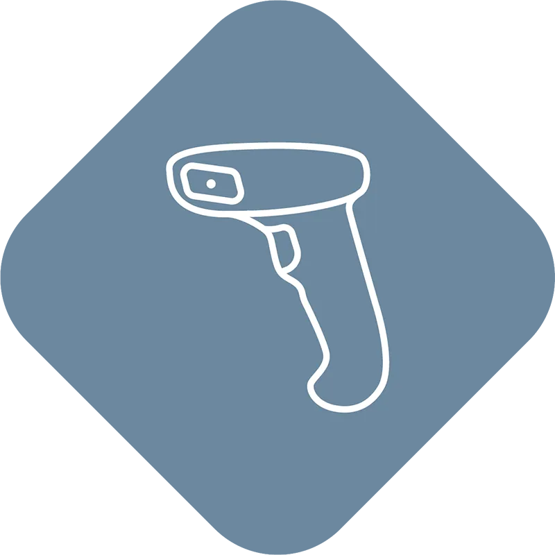

Smarttelefonar
Kamera i telefonar, der modulen må vere tynn og fokus rask.
KameraKamera i telefonar, der modulen må vere tynn og fokus rask.
KameraSmå einingar med knapp plass til mekanikk.
SmåttMaskinsyn og inspeksjon der fokus må skiftast raskt.
IndustriKamera i AR-briller og hovudsett.
ARKamera i medisinsk utstyr med krav til presisjon.
HelseFokus som følgjer det som er i bildet.
VideoI små kamera er mekanikken ofte det som tar plass og går i stykker. TLens® løyser fokus uten bevegelege delar — og det er nettopp i dei små einingane teknologien gjer mest nytte.

Ta kontakt, så ser vi på det saman.